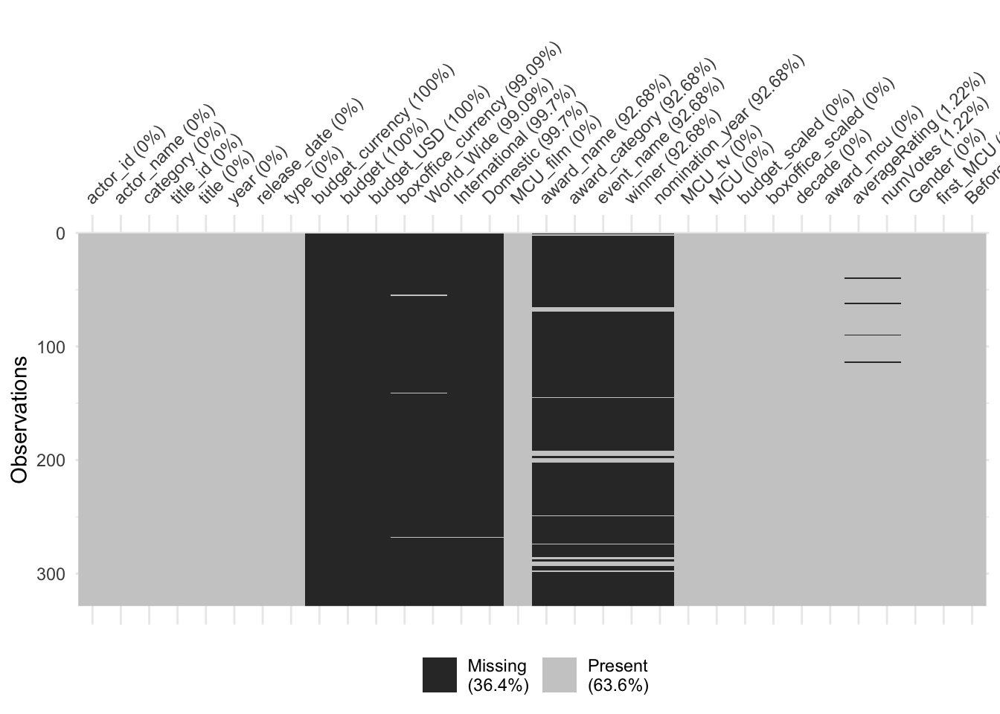
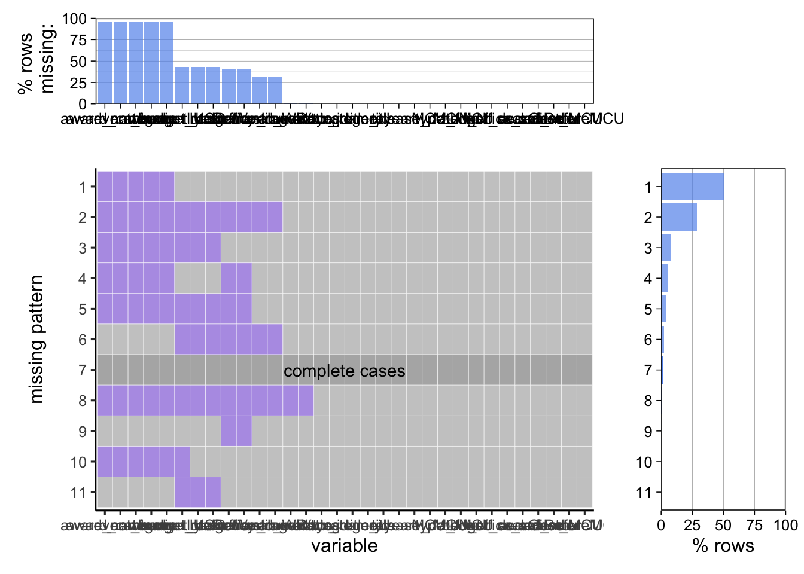

Chapter 7 try out some options before d3
g1 <- film_clean %>%
filter(year >= 1990) %>%
filter(type == "Movie") %>%
ggplot(aes(x = release_date, y = actor_name, color = MCU, size = World_Wide)) +
scale_size(range = c(1,4), name = "Box Office", breaks = c(1000000, 500000000, 1000000000, 2000000000),
labels = c("$1M", "$500M", "$1B", "$2B")) +
scale_x_date(date_breaks = "5 years", date_labels = "%Y") +
scale_color_manual(values = c(colors[2], colors[11]))+
labs(y = "Actor Name",
x = "Release Date",
title = "Filmography Box Office")+
geom_point(alpha = 0.8, stroke = 0) +
theme_minimal()
g1
For most of the actors, the MCU films are the highest grossing films that they are a part of. For some actors, there are a few other notably high grossing films, such as Star Wars, Jurassic World, Avatar, and the Hobbit movies. MCU box office numbers tend to dwarf those of other films, so the comparison is somewhat difficult. There is not a clear pattern indicating that actors who work on MCU movies, then follow with smaller scale productions. Although it does seem that after Endgame (the last very large blue dot form 2019), many of the actors have participated in far fewer films than they did before. This could also be due to Covid slowing the release dates of many productions.
awards_graph <- film_clean %>%
filter(year >= 1990) %>%
filter(type == "Movie") %>%
arrange(award_mcu, descending = FALSE)
g_awards <- ggplot(awards_graph) +
geom_point(mapping = aes(x = release_date, y = actor_name, color = award_mcu, text = title),
size = 2, alpha = 0.8) +
scale_x_date(date_breaks = "5 years", date_labels = "%Y") +
scale_color_manual(values = c(colors[4], colors[2], colors[11], colors[6]), name = "Film Type")+
labs(y="",
x = "Release Date",
title = "Film Releases by Actor",
subtitle = "Any Credited Role")+
theme_minimal()
g_awards
Most actors have quite a few roles before entering the MCU (only showing after 1990). The MCU tends to bring on more known actors - every actor that has won an Academy Award has done so before being in an MCU film.